Quick Start
- Launch the application — the Import Data dialog opens automatically.
You can always get to import data dialog by clicking the Import button in the Log Manager toolbar (or pressing Ctrl+I).
- Pick a source type — File, SFTP, Kubernetes,
Database, or URL — and load it.
Source type tabs for types other than file or url are disabled in the Import data dialog by default. These datasources can be added through the Settings dialog.
- The viewer attempts to auto-detect the log format (pattern) and opens in a new tab.
If no existing pattern matches, a catchall format is used.
- Type a query in the filter bar (e.g.
level = 'ERROR') and press Enter. - Drag the time-slider thumbs (left edge of the table) to narrow to a time window.
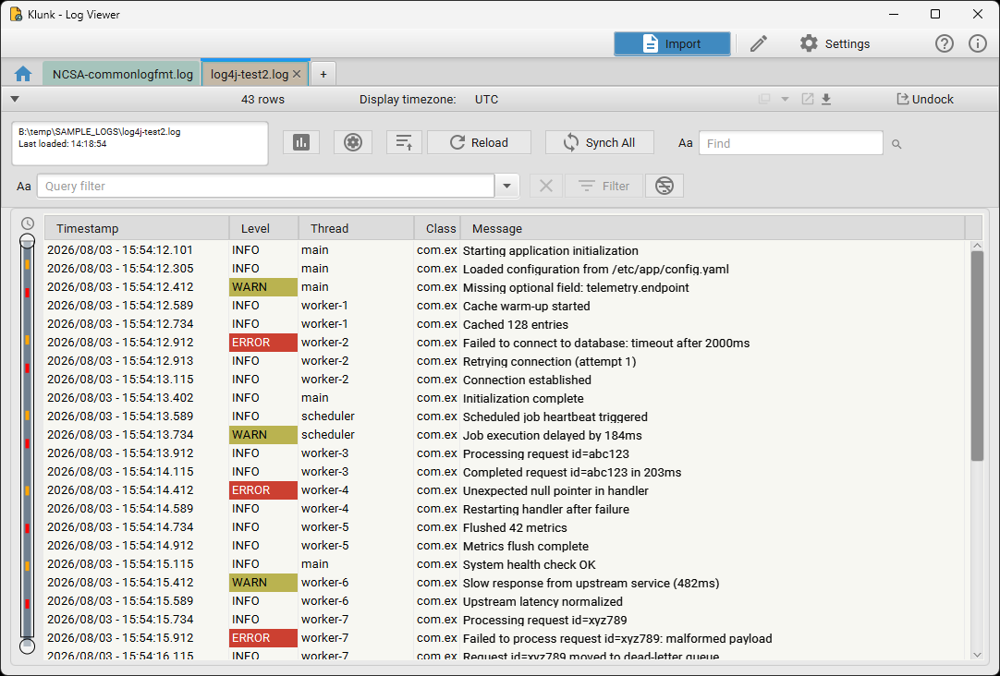
Importing Logs
Click Import in the Log Manager toolbar (or press Ctrl+I) to open the Import Data dialog. It has one tab per source type — File, SFTP, Kubernetes, Database, and URL.
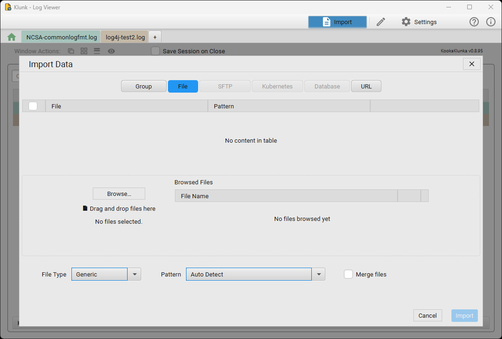
Local Files
- Select the File tab.
- Click Browse… or drag and drop one or more files onto the drop area.
- Choose a File Type (Generic, or a specific type) and a Pattern — leave as Auto Detect to let the app pick the best match.
- Check Merge files to combine multiple selected files into one chronological view immediately on import (equivalent to importing them separately and then using Merge in the Log Manager).
- Click Import.
External Databases
Supported drivers: MySQL, PostgreSQL, ClickHouse, Oracle, SQLite, and any custom JDBC driver registered in the Driver Editor.
- Select the Database tab.
- Pick a saved datasource, or create one via the DB Datasource Editor (host, port, database, credentials).
- Choose the target table and a Log Pattern describing its columns.
- Click Import.
Kubernetes Logs
- Select the Kubernetes tab.
- Pick a saved cluster connection (configured via the Kubernetes Datasource Editor — paste a kubeconfig or point at a config file).
- Choose a namespace and pod (or a pod-name filter for multi-pod streaming), then import.
SFTP Remote Files
- Select the SFTP tab.
- Pick a saved connection, or create one via the SFTP Datasource Editor (host, port, username, password, or an SSH private key — optionally the app-wide default key set in Settings).
- Browse the remote filesystem and select a file to import.
The file downloads to a local temp cache and opens in the standard viewer; large files stream page by page.
HTTP / URL Sources
- Select the URL tab.
- Paste an HTTP or HTTPS URL that returns plain-text log data.
- Select a log pattern and import.
Request Options — Headers & Pagination
Click Request Options… on the URL tab to add custom request headers, a POST body, and multi-page fetching for APIs that don't return everything in one response.
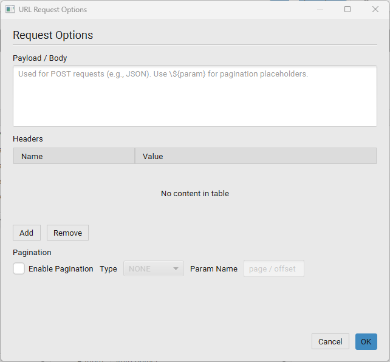
Payload / Body
Only sent with POST requests (set the method on the URL tab first). A body starting with
{ or [ automatically gets a Content-Type: application/json
header. Reference the current pagination value with ${paramName}, matching whatever you
type into Param Name below:
{"query": "level:ERROR", "page": ${page}, "pageSize": 100}Headers
Click Add to insert a row — the Name cell is focused immediately so you can type right away. Press Enter, Tab, or type : to jump from Name to Value. Headers are sent with every request, including every page of a paginated fetch:
Authorization: Bearer eyJhbGciOi...
Accept: application/x-ndjson
X-Api-Key: 3f29a1c0-...Pagination
Check Enable Pagination and pick a Type. Param Name is
the query parameter (GET) or ${placeholder} key (POST payload) that carries the page
value; Page Size and Max Pages cap how far the import will keep
fetching — it also stops early the moment a page comes back empty.
| Type | What it sends | Stops when |
|---|---|---|
| PAGE | Param Name = a page number, starting at 1 and incrementing each request |
A page returns no rows, or Max Pages is reached |
| OFFSET | Param Name = a row offset, starting at 0 and increasing by Page Size each
request
|
A page returns no rows, or Max Pages is reached |
| CURSOR | Param Name = the cursor value read out of the previous response's JSON at
Cursor JSON Path (dot-separated, e.g. meta.next_cursor)
|
The cursor path comes back empty or missing, or Max Pages is reached |
Example — PAGE, GET request. URL https://api.example.com/logs, Method
GET, Param Name page, Page Size 100, Max Pages 5:
GET https://api.example.com/logs?page=1
GET https://api.example.com/logs?page=2
GET https://api.example.com/logs?page=3
...Example — OFFSET, POST request. Method POST, Param Name offset,
Page Size 500, Payload:
{"query": "level:ERROR", "offset": ${offset}, "limit": 500}sends bodies with offset equal to 0, then 500, then
1000, and so on for up to Max Pages requests.
Example — CURSOR, GET request. Param Name cursor, Cursor JSON Path
meta.next_cursor. If page 1's response body is:
{"items": [...], "meta": {"next_cursor": "abc123"}}page 2 is fetched as ...?cursor=abc123; fetching stops as soon as a response has no
meta.next_cursor value.
Log Manager Dashboard
The Log Manager is the central hub. It lists every open log view with its name, error/warning summary, and date range.
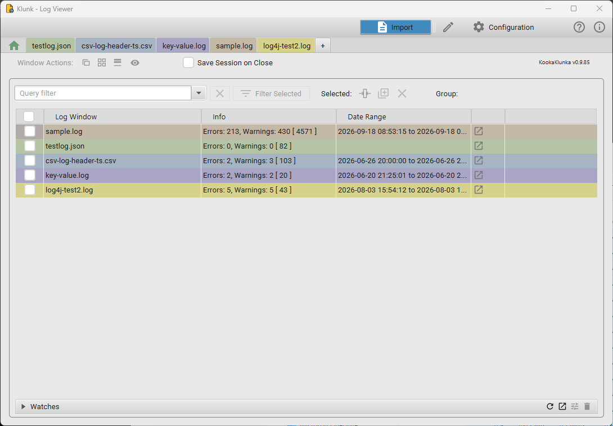
| Column | Meaning |
|---|---|
| Log Window | The file name or source description |
| Info | Error/warning counts and total row count for that view |
| Date Range | Earliest and latest timestamp in the data |
Toolbar actions:
- Query filter — filters the list of windows itself (not their contents) by name.
- Filter Selected — opens a merged, filtered view scoped to the selected windows.
- Selected: + / 🔀 / ✕ — with one or more rows checked: Merge the selected windows, Group the selected windows, or Close the selected windows.
- Watches (bottom bar) — expand to manage cross-log watch/alert rules that scan open logs for matching entries.
Docking and Undocking
Every new view opens as a tab inside the main Log Docker by default.
- Undock: Click Undock in the viewer header to pop the tab out into a resizable standalone window.
- Redock: Click Dock in the floating window's toolbar to return it to the tab bar.
- Undocked windows keep all filters, bookmarks, and time-slider position when redocked.
Window Layouts
| Option | Effect |
|---|---|
| Cascade Windows | Stack windows with an offset so each title bar is visible |
| Tile Windows | Fill the screen evenly |
| Minimize All Windows | Iconize every undocked window |
| Show All Windows | Bring every window to the front and un-minimise it |
Merging Logs
Merging lets you view entries from several sources in a single chronological stream — ideal for correlating events across microservices.
- In the Log Manager, check two or more windows.
- Click the merge icon under Selected:. A new Merged View tab opens.
- Each source gets a distinct colour. The Source column shows every row's origin.
Grouping Windows
Groups tag a set of open windows with a shared name and colour, so they can be saved and reloaded together later, or analyzed as a set.
- Select two or more windows in the Log Manager and click the group icon under Selected: (or Ctrl+G).
- In Group Windows, enter a name (or pick an existing group to reuse its colour), choose a colour, and leave Save group for later reloading checked to persist the group to disk immediately.
- Click Set Group, or Clear Group to remove the tag from the selected windows.
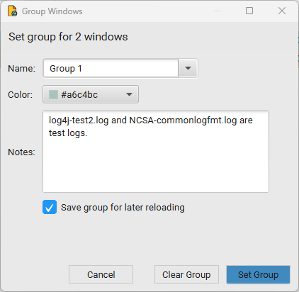
Once at least one group exists, the Log Manager shows Save Group and Analyze Group buttons:
- Save Group — pick a group and persist its currently open windows to disk for later reloading (the same action the checkbox above performs automatically).
- Analyze Group — pick a group and generate an aggregated analysis report across every log file in it.
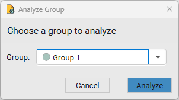
The resulting Group Analysis report aggregates severity counts and an hourly issue-frequency chart across every file in the group, plus a per-file breakdown table (rows, errors, warnings). Additional tabs cover Issues & Clusters and Token Linkage for deeper cross-file correlation.
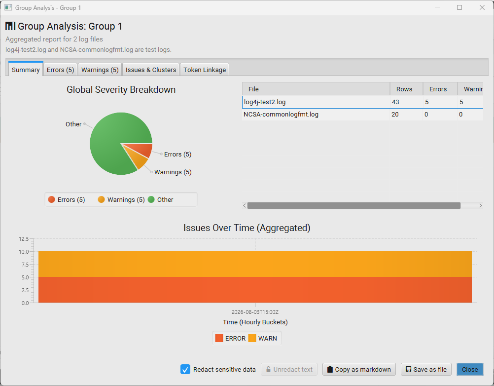
The Log Viewer
Table Overview
| Column | Notes |
|---|---|
| Timestamp | Sortable; drives the time slider |
| Level | Colour-coded: ERROR, WARN, INFO/other in the default colour |
| Thread | Originating thread |
| Message | Full log message; wraps for multi-line entries |
| Source | Merged views only — origin file or pod |
- Column resize: Drag any column edge.
- Sort: Click a header — ascending, then descending. Available for in-memory datasets — see Performance.
- Column widths are saved with the session.
Row Detail View
Double-click a row (or press Enter) to open the Row Detail panel. It shows every field fully wrapped, with one-click copy for individual fields or the entire entry.
Filtering Logs
The filter bar at the top of every viewer accepts SQL-style WHERE expressions. Press Enter to apply, Escape to clear. Previously used filters appear in the dropdown, and the row count updates immediately to show how many entries match.
Filter Query Syntax
Column names match the pattern's field names: timestamp, level,
message, thread, and source (merged views).
Equality and inequality
level = 'ERROR'
thread = 'http-nio-8080-exec-1'
level != 'DEBUG'Set membership (IN / NOT IN)
level in ('ERROR','WARN')
level not in ('ERROR','WARN')Pattern matching (LIKE / NOT LIKE)
% matches any sequence; _ matches exactly one character.
message LIKE '%NullPointerException%'
logger LIKE 'com.example.%'
message NOT LIKE '%health%'Comparison and range (timestamps and numbers)
timestamp >= '2026-06-01T08:00:00Z'
timestamp < '2026-06-01T09:00:00Z'
timestamp BETWEEN '2026-06-01T08:00:00Z' AND '2026-06-01T09:00:00Z'- ISO-8601 with offset:
2026-06-03T04:15:48Zor2026-06-03T04:15:48.000Z - ISO-8601 with offset:
2026-06-03T04:15:48+05:30 - Display format:
2026-06-03 - 04:15:48.000 - Display format (no separator):
2026-06-03 04:15:48
Boolean logic — AND / OR / parentheses
AND binds tighter than OR. Use parentheses to group sub-expressions.
level = 'ERROR' AND thread = 'main'
(message LIKE '%timeout%' OR message LIKE '%connection refused%') AND level = 'ERROR'
-- Slow DB calls in one package:
logger LIKE 'com.example.db.%' AND message LIKE '%ms%' AND level != 'DEBUG'Filter-Out (Exclusion)
Use Filter Out to hide noise without changing the main filter.
- Click Filter Out in the toolbar.
- Enter exclusion rules using the same syntax as the main filter.
- Apply. Matching rows are hidden.
-- Exclude health-check and metric noise:
message LIKE '%actuator/health%' OR logger LIKE 'io.micrometer.%'Search and Find
Find (Aa field, or Ctrl+F) highlights all occurrences of a text string within the visible rows.
| Action | Shortcut |
|---|---|
| Open find bar | Ctrl+F |
| Find next | F3 |
| Find previous | Shift+F3 |
| Toggle case-sensitive find | Click the Aa toggle next to the field |
| Clear / close | Escape |
2026-06-03 - 04:15:48.000) are searchable as displayed.
Turn the find text into a filter: click the magnifier button beside the find field
(tooltip Add filter for find text) to build a query that matches the current find text
across every column — col1 LIKE '%text%' OR col2 LIKE '%text%' … — apply it to
the filter bar, and clear the find field. Where Find only highlights matches in the loaded rows,
this narrows the table to matching rows and runs over the full dataset, including SQLite-paged
files.
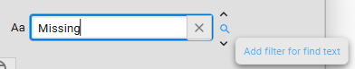
Time Slider
The vertical slider on the left edge of the table represents the full time range of the loaded (and filtered) log. It only appears for patterns that include a timestamp column.
| Element | Meaning |
|---|---|
| Top / bottom thumb | Upper and lower bounds of the selected time range |
| Red bars | Rows with level ERROR or FATAL |
| Orange bars | Rows with level WARN |
| Coloured ticks | Bookmarked rows, in their bookmark colour |
| Shaded band | The currently visible portion of the table |
- Drag a thumb to narrow or expand the time window. The table filters on mouse release.
- Click the track (not a thumb) to scroll the table to that position without filtering.
- Hover over any marker or thumb for a tooltip showing the exact timestamp.
Bookmarks and Highlights
Bookmarks let you pin important rows for navigation, review, and later filtering.
Creating a bookmark: right-click a row → Bookmark (uses the last-used colour), or Bookmark [choose color] to pick a colour from the palette (10 colours). A coloured marker appears on the row background and on the time slider.
Right-clicking an already-bookmarked row shows options to manage it:
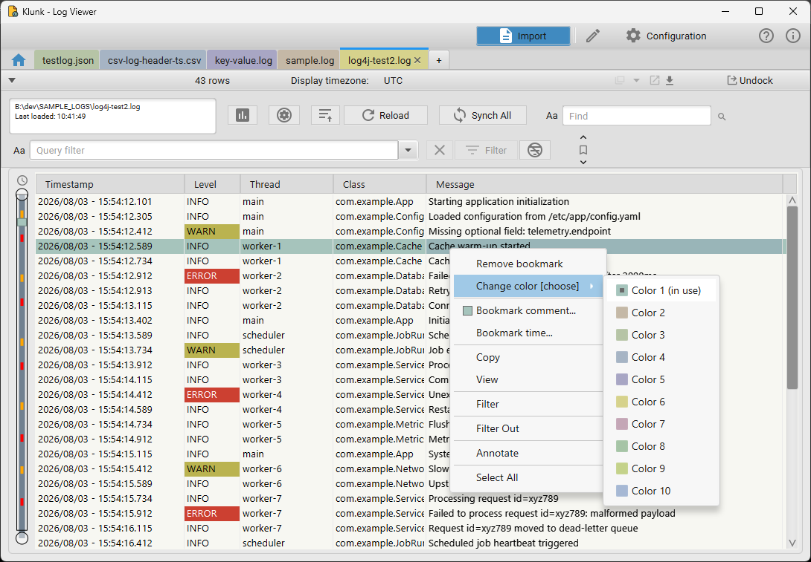
- Remove bookmark — clears the bookmark from the row.
- Change color — reassign the bookmark's colour.
- Bookmark comment… — attach a free-text note to the bookmarks of this color, useful context when reviewing or feeding an analysis to an AI prompt.
| Action | How |
|---|---|
| Jump to next bookmark | Click ↓ in the viewer header, or Ctrl+Down |
| Jump to previous | Click ↑, or Ctrl+Up |
| Show bookmarks only | Toggle the bookmark button — non-bookmarked rows are hidden |
Bookmark Time (Time Correlation)
Bookmark time… (on the row context menu) bookmarks a row and automatically bookmarks all rows matching timestamp — within a configurable leeway — in every other open log or in a chosen group. It's the fastest way to line up related events across several logs that don't share a common request ID.
- Right-click the row of interest → Bookmark time….
- Choose a Leeway window (±5 ms up to ±1 min, or a custom value).
- Pick a Bookmark color.
- If the current log viewer belongs to a correlation group, a Target dropdown lets you scope the correlation to that group instead of every open log.
- Click Bookmark.
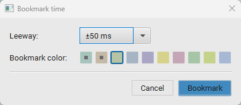
Bookmark Filters
Toggle the bookmark button in the viewer header to switch on Show bookmarks only, which hides every non-bookmarked row. From there, use Bookmark Filters (the settings icon next to the bookmark toggle) to narrow that down further to specific bookmark colors — useful once you have several bookmark colors in play for different purposes (e.g. using distinct colors for grouping rows of interest)
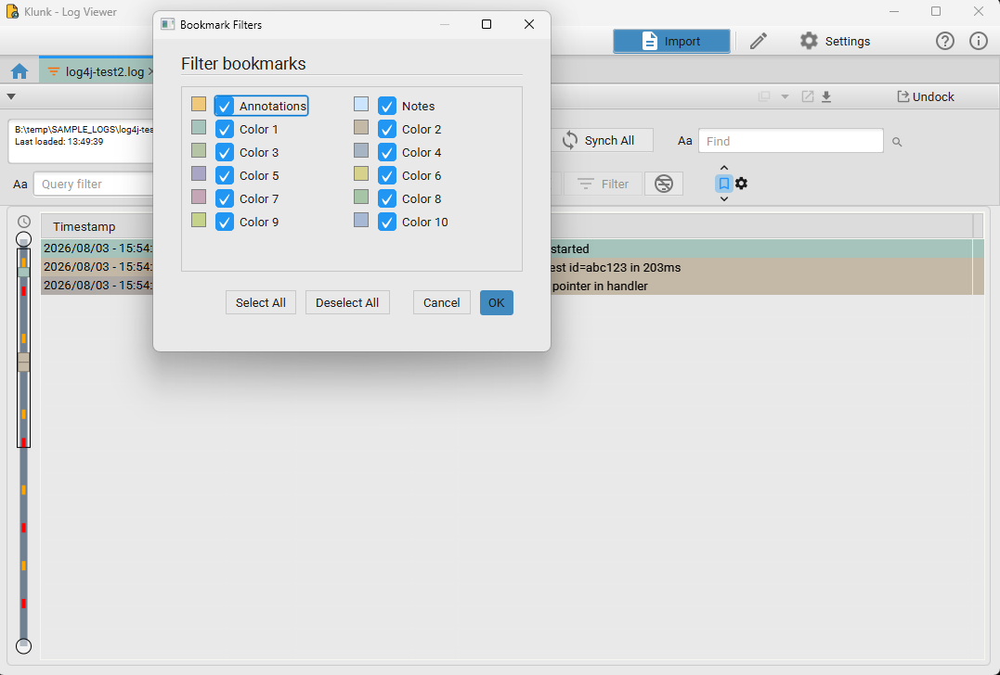
Toggle individual colours (or Annotations / Notes, the special bookmark categories) on or off, then OK to apply.
Annotation Bookmarks
Annotations are saved queries that are automatically applied as bookmarks whenever a matching log file is loaded — and optionally raise a watch/alert.
- Right-click a row → Annotate (or manage them via Settings → Annotations → Annotation Manager…).
- Give the annotation a description, and confirm or edit the Query Pattern (pre-filled
from the row you right-clicked, e.g.
Message LIKE '%Potential hang on request id=%'). - Optionally restrict it to files whose name contains a given string via Filename Filter.
- Optionally set Watch Severity (
None,INFO,WARN,ERROR) to also raise a watch alert during tailing and on file open — leave it at None (annotation only) for a silent bookmark. - Save.
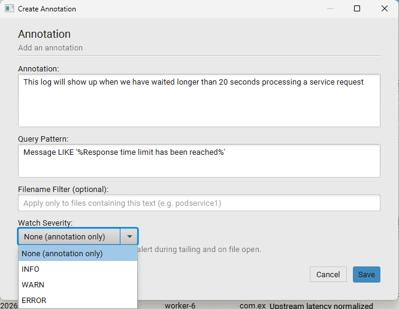
On every load, the application runs each matching annotation in the background and marks the matching rows. Annotation bookmarks are listed as their own category in the Bookmark Filters dialog, separate from the numbered colour bookmarks.
Live Tailing
- Click Tail (▶) in the viewer toolbar.
- New entries appear at the bottom as they arrive. The table auto-scrolls to the latest entry.
- Click anywhere in the table to pause auto-scroll; it resumes when you scroll back to the bottom.
- Click Tail again (■) to stop.
- File rotation: Detects when
app.logis replaced by a new file and restarts reading automatically. - Kubernetes tailing: Streams new pod log lines with minimal delay.
- Filters during tail: All active filters apply in real time — keep an
ERRORfilter to see only exceptions as they occur.
Log Analysis
Click the bar-chart icon (Analyze Currently Displayed Log Rows) in the viewer toolbar to generate a report over whatever is currently shown — the full file, or the result of your active filter and time range.
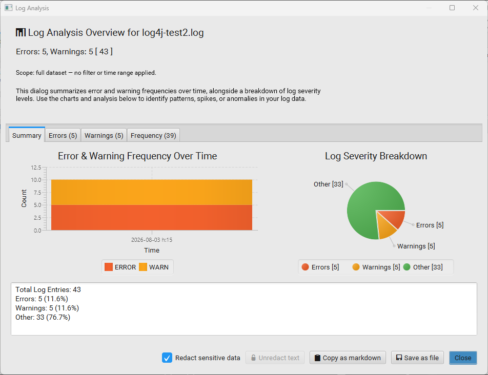
- Summary — total entries, error/warning counts and percentages, an error/warning frequency-over-time chart, and a severity breakdown pie chart.
- Errors / Warnings — the individual matching rows.
- Frequency — a time-bucketed breakdown of activity.
At the bottom:
- Redact sensitive data (checked by default) — scrubs values before they're shown or exported, applying your custom Redaction find/replace rules first, then pattern-based redaction (IPs, emails, etc.).
- Unredact text — reveals the original text again (only enabled once redaction has been applied).
- Copy as markdown / Save as file — export the report, e.g. to paste into a ticket or an AI assistant.
Reloading and Load Settings
Click Reload to re-read the source with its current pattern and settings, or click the gear icon (Log Settings) to change how it's loaded before reloading:
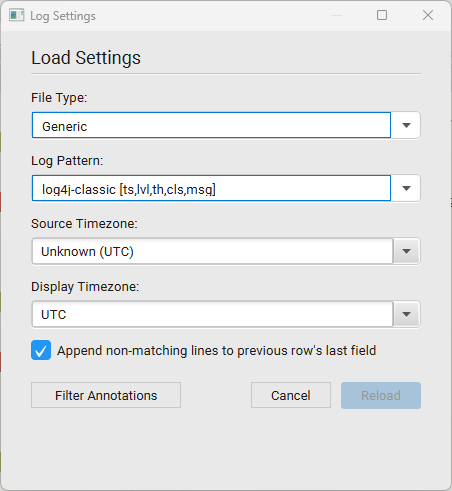
- File Type / Log Pattern — switch which pattern is used to parse the file.
- Source Timezone — the timezone the raw timestamps are written in (if not embedded in the format itself).
- Display Timezone — the timezone timestamps are rendered in in the table (independent of the source timezone).
- Append non-matching lines to previous row's last field — when a physical line doesn't match the pattern (e.g. a stack-trace continuation line), append it to the previous row instead of dropping it or creating a malformed row.
- Filter Annotations — jump straight to managing annotations that apply to this file.
Click Reload to apply the changes.
Log Patterns
A Log Pattern tells the application how to split each log line into structured columns. The correct pattern is essential for filtering, sorting, and merging.
Auto-Detection
When you open a file, the application scans the first several hundred lines and tries every known pattern in order of specificity. If a pattern matches, it is selected automatically.
If auto-detection fails, the file is opened with the Catchall pattern, which loads every line as a single unstructured message column with no timestamp.
Built-in Pattern Types
| Type | Description | Example source |
|---|---|---|
| Text / Log4j | Regex-based; covers Log4j, Logback, and custom text formats | app.log |
| CSV | Delimiter-separated columns; first row is header | access.log, exported data |
| JSON | Newline-delimited JSON objects | Structured logging, Fluentd |
| XML | Element-per-entry XML | Some application servers |
| Catchall | One column per line, no parsing, no timestamp | Any unknown format |
| Database | Column layout discovered from the DB schema | External DB tables |
| Kubernetes | Kubernetes API log format | kubectl logs output |
| SFTP | Delegates to one of the above after download | Remote servers |
Pattern Editor
Open the Log Pattern Editor from Settings → Patterns → Log Pattern Editor…, or click Change Pattern from an open viewer.
- Load Existing Pattern to edit one, or start fresh by filling in Pattern Name, Pattern Type, and a Sample Log Line.
- Write (or generate — see Regex Pattern Generator) a Regex Pattern with capture groups.
- Set the Time Parse Format (Java
DateTimeFormattersyntax), or click ISO for a standard ISO-8601 shortcut. - Click Apply Regex to Sample to populate Column Mappings from the
sample line, then adjust each column's Column Name, Column Type,
and Column Size (
FILLlets a column absorb remaining width). - Save Pattern. Patterns can also be Imported / Exported as files to share between installs.
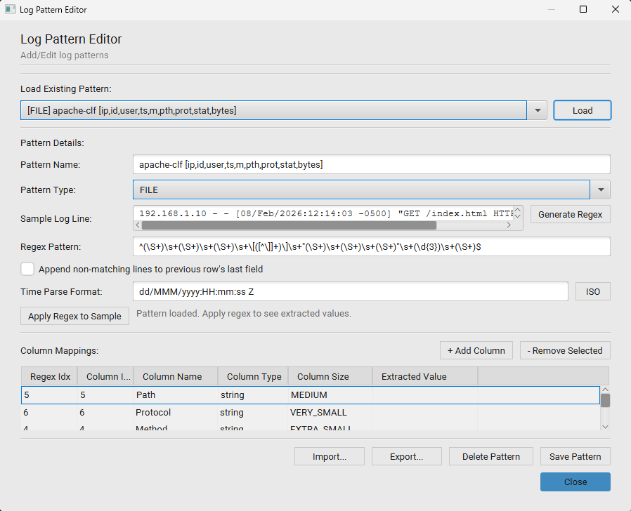
Example pattern for a typical Logback line:
^(\d{4}-\d{2}-\d{2} \d{2}:\d{2}:\d{2}\.\d{3})\s+(\w+)\s+\[([^\]]+)\]\s+([\w.$]+)\s+-\s+(.*)$| Format string | Matches |
|---|---|
yyyy-MM-dd HH:mm:ss,SSS |
2026-06-03 04:15:48,123 |
yyyy-MM-dd'T'HH:mm:ss.SSSXXX |
2026-06-03T04:15:48.123+00:00 |
dd/MMM/yyyy:HH:mm:ss Z |
03/Jun/2026:04:15:48 +0000 (Apache) |
EEE MMM dd HH:mm:ss zzz yyyy |
Wed Jun 03 04:15:48 UTC 2026 (syslog) |
Regex Pattern Generator
Don't want to hand-write a regex? Click Generate Regex next to the sample line in the Pattern Editor.
- Working left to right along the Sample Log Line, select the portion you want as a capture group and click Add Selected as Group. Repeat for each field (timestamp, level, thread, message, …).
- Unselected text between groups is kept as Literal text the regex must match exactly.
- The Generated Regex Preview builds up live as you add groups.
- Click Apply to copy the generated regex back into the Pattern Editor's Regex Pattern field, then map each group to a column as usual.
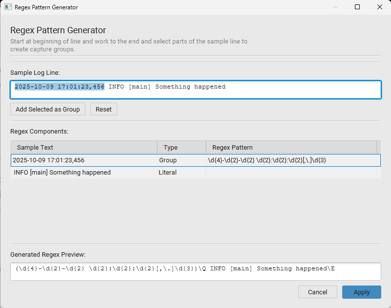
Changing a Pattern After Load
You can switch patterns on an already-loaded file without closing and re-opening it: click the gear icon in the viewer toolbar to open Load Settings, change Log Template, and click Reload.
Managing Datasources
Beyond the one-off Import dialog, connection details for databases, Kubernetes clusters, and SFTP servers can be saved as reusable datasources so you don't have to re-enter credentials each time. Manage them from Settings → Datasource: Database / Kubernetes / SFTP, or directly from the Import Data dialog's respective tab.
DB Datasource Editor — create, edit, test, and delete saved database connections (name, DB type, driver, host, port, database, username, password, or a raw JDBC URL). Passwords are stored encrypted unless Save password is unchecked.
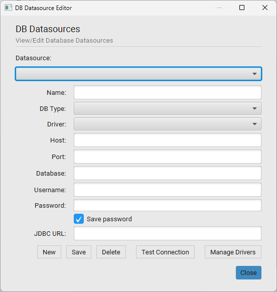
Click Manage Drivers to register a custom JDBC driver (name and main class) beyond the built-in ones:
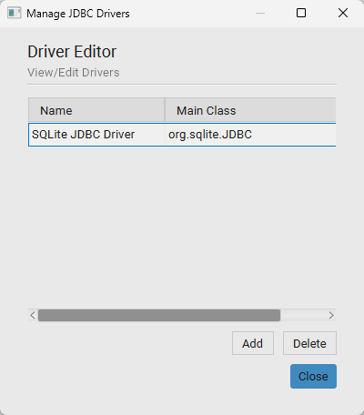
Kubernetes Datasource Editor — save a named cluster connection, either by pasting a kubeconfig directly or pointing at a config file on disk, then Test Connection before saving.
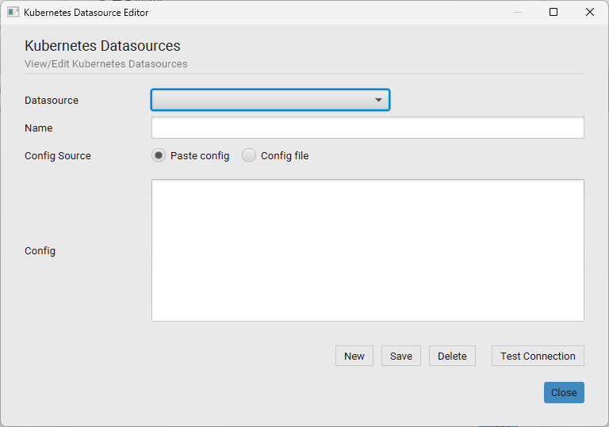
SFTP Datasource Editor — save host, port, username, and either a password or an SSH private-key path (with optional passphrase). If a default SSH key is configured in Settings → Datasource: SFTP, individual connections can rely on it instead of specifying their own key.
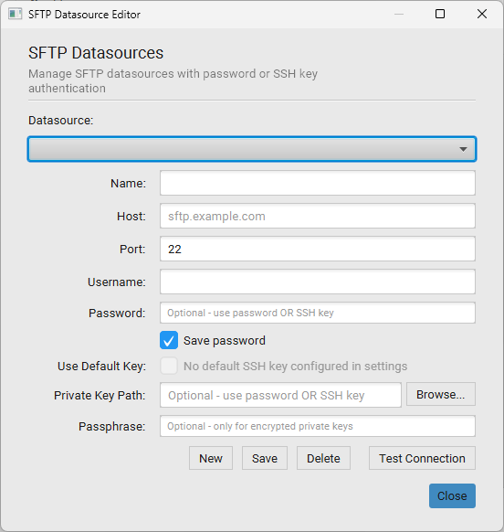
Session Persistence
Klunk - Log Viewer can save your workspace when you close it and restore it on next launch — toggle Save Session on Close in the Log Manager toolbar.
What is saved per viewer:
- Source file paths or database/Kubernetes/SFTP connection details
- Active log pattern
- Applied text filter and filter-out rules
- Selected time range
- Bookmarked rows and their colours
- Column widths
- Window position and size (for undocked windows)
- Whether tailing was active
Performance and Virtualization
Klunk - Log Viewer handles very large log files through adaptive virtualization.
| Dataset size | Mode | Behaviour |
|---|---|---|
| Below the threshold | In-memory | All rows in RAM; instant sorting, instant filtering |
| At or above the threshold | SQLite-paged | Pages fetched on demand; never switches back to in-memory |
In SQLite-paged mode, sorting is disabled (data is pre-ordered by timestamp at load time). Filtering uses SQL WHERE clauses executed in SQLite — no memory overhead.
Tuning virtualization — raw properties editable under Settings → Advanced:
| Property | Effect |
|---|---|
log.virtualization.threshold |
Row count above which SQLite paging is used |
log.virtualization.pagesize |
Rows fetched per page in SQLite mode |
log.tail.interval.seconds |
How often a tailed source is polled for new lines |
log.file.check.enabled / log.file.check.interval.secs |
Whether — and how often — open files are checked for external changes (the reload indicator) |
Raise the threshold if you have ample RAM and prefer the faster in-memory experience. Lower it if you see high memory usage with large files.
Application Settings
Open Settings from the Log Manager toolbar. It's a collapsible accordion — click a section header to expand it.
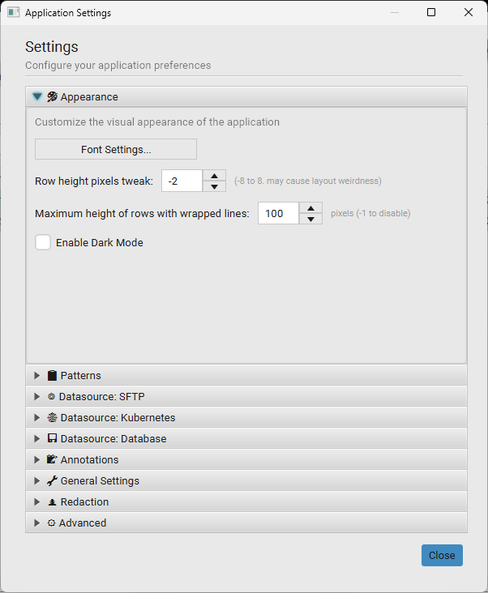
Appearance
| Setting | Description |
|---|---|
| Font Settings… | Opens the font-family / size picker for the log table |
| Row height pixels tweak | Nudge row height by −8 to +8 px |
| Maximum height of rows with wrapped lines | Cap on how tall a wrapped multi-line row can grow (-1 disables the cap) |
| Enable Dark Mode | Toggle the Light/Dark theme |
Patterns
Opens the Log Pattern Editor.
Datasource: SFTP / Kubernetes / Database
Each opens the corresponding datasource editor. The SFTP section also lets you Browse… to or Generate New… a default SSH private key used automatically by SFTP connections that don't specify their own.
Annotations
| Setting | Description |
|---|---|
| Annotation Manager… | Create, edit, and delete annotation rules |
| Apply bookmark annotations on load | Whether annotations are auto-applied when a matching file is opened |
| Use external database for annotations | Store/read annotations from an external database instead of the internal SQLite store |
General Settings
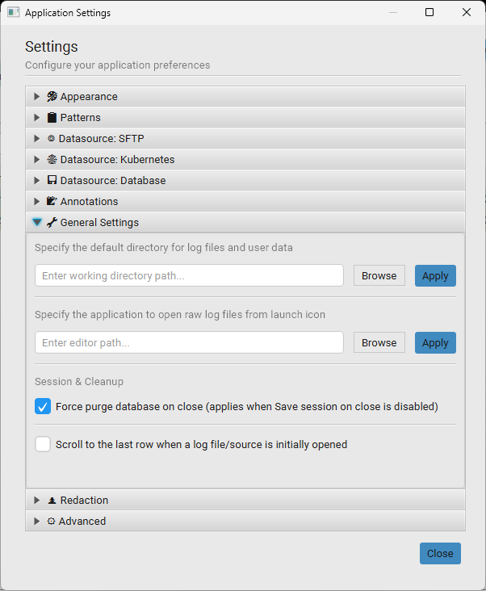
| Setting | Description |
|---|---|
| Working directory | Default directory for log files and user data |
| External editor path | Application used to open raw log files from the launch icon |
| Force purge database on close | Applies when Save Session on Close is disabled — clears the internal database on exit instead of leaving it for next launch |
| Scroll to the last row when a log file/source is initially opened | Jump straight to the newest entry on open |
Redaction
Literal find/replace substitutions (case-insensitive) applied before pattern-based redaction when generating Log Analysis or Group Analysis reports — e.g. replacing a real company or hostname with a generic placeholder before pasting a report into an AI assistant.
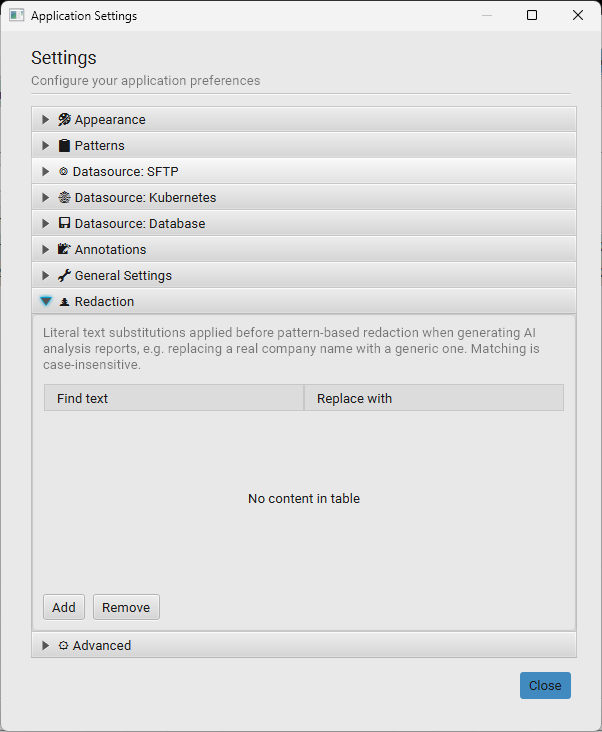
Advanced
Directly edit raw configuration properties not exposed elsewhere in the UI — useful for the
virtualization tuning properties and any watch.alert.* export
settings. Some changes may require a restart.
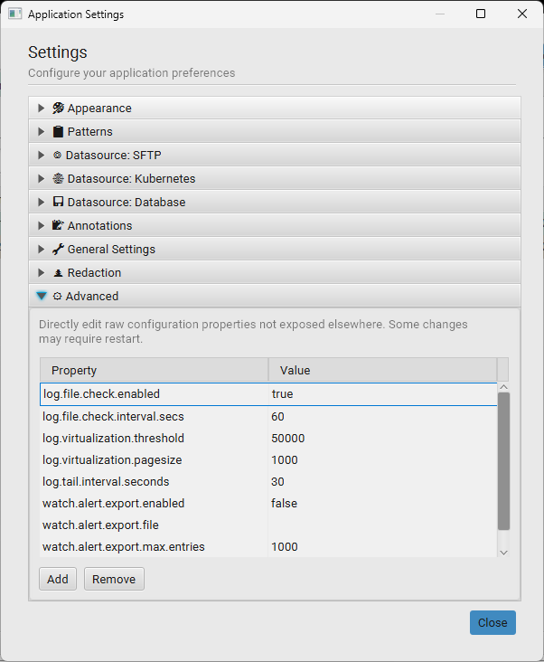
Keyboard Shortcuts
Log Manager
| Shortcut | Action |
|---|---|
| Ctrl+I | Open the Import dialog |
| Ctrl+F | Focus the window-search filter |
| Ctrl+W | Close selected windows |
| Ctrl+M | Merge selected windows |
| Ctrl+G | Group selected windows |
| Ctrl+Shift+G | Save a group's windows for later reloading |
| Ctrl+Alt+A | Analyze a group |
Log Viewer
| Shortcut | Action |
|---|---|
| Ctrl+F | Open / focus Find bar |
| F3 | Find next |
| Shift+F3 | Find previous |
| Escape | Clear Find bar / clear filter |
| Enter | Open Row Detail for selected row |
| Ctrl+A | Select all visible rows |
| Ctrl+C | Copy selected rows to clipboard (tab-separated) |
| Ctrl+↑ | Jump to previous bookmark |
| Ctrl+↓ | Jump to next bookmark |
| ↑ / ↓ | Move selection one row |
| Page Up/Down | Scroll one screen |
| Ctrl+E | Export Log… |
| F5 | Reload log from source |
Troubleshooting
"No content available" after opening a file
The log pattern did not match any lines. Try:
- Click the gear icon (Log Settings) → change Log Pattern to a different pattern.
- If no built-in pattern fits, open the Pattern Editor and create a custom one.
- As a last resort, use the Catchall pattern — it loads every line as a raw message.
Time slider is not visible
The time slider only appears for patterns that include a timestamp column. Add a timestamp field in the Pattern Editor to enable it.
Filter returns no results for a valid timestamp
Both 2026-06-03T04:15:48Z and 2026-06-03T04:15:48.000Z are equivalent and both
accepted. Display-format queries like 2026-06-03 - 04:15:48.000 also work.
Application is slow when scrolling a large file
- Check whether the file exceeded the virtualization threshold — SQLite-paged files fetch pages on demand rather than holding everything in RAM.
- If you're on a large file still in in-memory mode, lower
log.virtualization.thresholdin Settings → Advanced so paging activates earlier.
"Parsing and inserting log entries" progress never clears
A background query (e.g. an annotation lookup) may be holding a read lock when the reload starts. The lock releases automatically. If it happens frequently, try disabling Apply bookmark annotations on load in Settings → Annotations while working with very large files.
Session does not restore a window
If a source file has moved or is unavailable at startup, that viewer is skipped during session restore. Re-open the file from its new location and the saved filters and bookmarks are picked up on the next close.
↑ Back to top